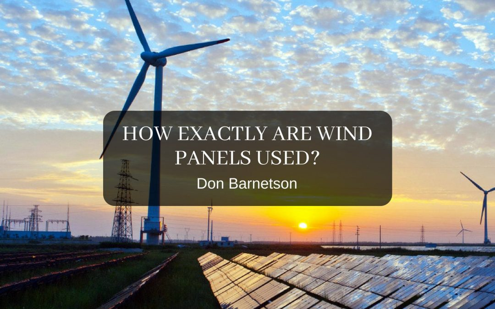

July 12, 2018
How Exactly Are Wind Panels Used?
Wind is a free, renewable form of energy that fits into the country's power grid. Learn about the three types of wind power -- utility-scale, distributed, and offshore -- and how turbines transform kinetic energy into electricity.
Read more →